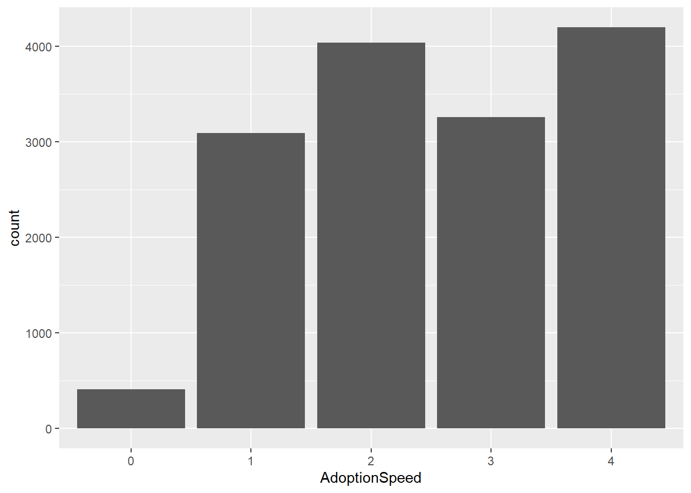

Chapter 5 Visualizations
Now let’s check out some visualizations to inform our models!
5.1 General Impressions
From the bar graph, we can see that it’s very rare for animals to get adopted on the day of listing. First, let’s look at pet adoption speed in general. We can see very little animals are adopted on the day that they arrived at the shelter, roughly 1/5 of the animals are adopted in less than a week, 1/5 of the animals are adopted between 2-3 months. 1/4 of the animals are adopted between 8-30 days, and slightly more than 1/4 of the animals are adopted after 100 days of being listed. What is causing the difference between adoption speeds?

5.2 Starting off
In this section we will look at “Type” and health-related factors.
5.2.1 Type
Let’s look at how adoption speeds can differ by animal types. We can see that there are more dogs than cats, and cats get adopted faster than dogs.
 If people tends to evaluate cats and dogs with different criterias, I think it is worthy to do two separate models. It will also make interpretation a lot easier! So what are some possible difference in the criterias? I would say size and age would matter a lot to me. I would be more hesitant to adopt a large dog or old dog.
If people tends to evaluate cats and dogs with different criterias, I think it is worthy to do two separate models. It will also make interpretation a lot easier! So what are some possible difference in the criterias? I would say size and age would matter a lot to me. I would be more hesitant to adopt a large dog or old dog.
However, our visualizations below doesn’t seem to show a big difference between people’s adoption criteria for cats and dogs. It is possible that people are very specific about whether they want to adopt a cat or dog, and more people want to adopt cats because they require less effort.
5.2.2 Health-related factors
Now, when we adopt an animal, what are some base criterias? For me, it would be the health of an animal. Many people lead busy lives, they might not have time to care for a pet that needs medical attention. The visualization below graphs the relative frequency of adoption speeds in each health category. We see that animals with minor or severe injuries are likely to get adopted slower. However, the majority of animals are in good health conditions.
Now, let’s look at visualizations for “Sterilized”, “Dewormed”, and “Vaccinated”. It seems like if the animals are sterilized, dewormed, and vaccinated, they are actually more likely to be adopted slower. This is different from what I expected, but these variables are definitely informative.

5.3 More digging
In this section, we would dig deeper into why sterilized, dewormed, and vaccinated animals get adopted slower. And we will see another factor that is significant in predicting adoption speed!
5.3.1 Age and Age Group
Another informative variable will be Age. Many people would be more inclined to adopt puppies and kittens. Let’s look at the general age distribution. We see that most of the animals are younger than 1 year old, and there are small spikes at 24 and 36. This is probably because it is hard to determine the animal’s age by month, so many people probably just report the approximate age of the animal in year. Moreover, a 2-year-old animal probably won’t be a lot more likely to get adopted faster than a 3-year-old animal. Therefore, putting the age into groups would probably be a better approach.
## `stat_bin()` using `bins = 30`. Pick better value with `binwidth`.## Warning: Removed 951 rows containing non-finite values (stat_bin).## Warning: Removed 2 rows containing missing values (geom_bar).I grouped the age by similar distribution of adoption speed. Age groups 0-5 correspond to animals aged 0-3,4-11,12-30,31-59,60-82,and 82 and older months, respectively.
5.3.2 The mysterious Breed 307
When I’m exploring breed, breed 307 seems to be the most common. We can also see that breed 307 is more likely to get adopted slower than other breeds. It turns out this is mixed breed! This makes sense since people might not consider mixed breed animals as attractive.
## # A tibble: 176 x 2
## Breed1 n
## <dbl> <int>
## 1 307 5927
## 2 266 3634
## 3 265 1258
## 4 299 342
## 5 264 296
## 6 292 264
## 7 285 221
## 8 141 205
## 9 205 190
## 10 179 167
## # ... with 166 more rows5.4 Other factors
There are some other factors that I thought would be significant but turns out to be false. For example, magnitude and score. Almost all descriptions have a positive score since this is a pet adoption website, and the magnitude of the descriptions seem to be pretty similar from each other.
## `stat_bin()` using `bins = 30`. Pick better value with `binwidth`.## Warning: Removed 624 rows containing non-finite values (stat_bin).## `stat_bin()` using `bins = 30`. Pick better value with `binwidth`.## Warning: Removed 624 rows containing non-finite values (stat_bin).
I also thought that the main color of the animals could be informative. However, the visualization does not show any apparent difference between color and adoption speed.